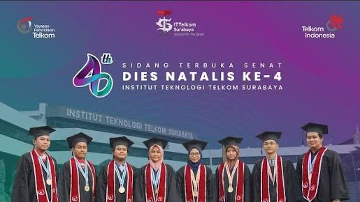

|
SISTEM INFORMASI
ITTelkom Surabaya |
| Tentang Kami | Akademik | Dosen & Staf | Kerja Sama | Blog |
Blog Sistem Informasi
Dua Wisudawan Sistem Informasi Berhasil Meraih Predikat CumlaudeInstitut Teknologi Telkom Surabaya telah menggelar prosesi wisuda ke-1 secara luring di hotel Grand Dafam, Surabaya pada Sabtu (26/03/2022) kemarin. Prosesi wisuda ini merupakan yang pertama dilakukan sejak kampus ini berdiri di tahun 2018 lalu. Pada wisuda pertama ini, 16 wisudawan telah dinyatakan lulus secara sah oleh Rektor ITTelkom Surabaya Bapak Dr. Tri Arief Sudharto, S.T., M.T.Seluruh wisudawan merupakan mahasiswa yang berhasil lulus dengan masa studi 3,5 tahun. Dua diantaranya merupakan mahasiswa program studi Sistem Informasi. Mereka adalah Alnina Tri Setya Berliana dan Irene Dyah Ayuwati. Keduanya berhasil menyandang gelar S.Kom dengan predikat cumlaude. Wisudawan dengan IPK tertinggi adalah Alnina Tri Setya Berliana yang tidak lain merupakan mahasiswa program studi Sistem Informasi dengan IPK 3,96. Pada prosesi wisuda ini pula, Rektor ITTelkom Surabaya telah menyampaikan pesan penuh semangat kepada para wisudawan agar terus mengembangkan diri sehingga dapat mengambil peran di era transformasi digital yang disruptif ini. Acara wisuda ini dapat disaksikan melalui kanal youtube ITTelkom Surabaya https://www.youtube.com/live/bboTVfT1NWY?si=sTKfU10RifCSt8zU  |
Artikel Terbaru
|
|
Sistem Informasi
Situs resmi Program Studi Sistem Informasi Institut Teknologi Telkom Surabaya. Website diperuntukkan sebagai media komunikasi internal & eksternal bagi mahasiswa, dosen, dan karyawan. Program Studi Sistem Informasi sudah ada sejak berdirinyaInstitut Teknologi Telkom Surabaya, berdasarkan Keputusan Menteri Riset, Teknologi, dan Pendidikan Tinggi no. 733 / KPT / I / 2018. Website ini menyajikan informasi tentang Program Studi Sistem Informasi, profil, visi dan misi, struktur organisasi, akademisi, kurikulum, dosen, penelitian dan pengabdian kepada masyarakat. |
Tautan Penting
|
Info Kontak
|
Build with ♥ by CODER Team